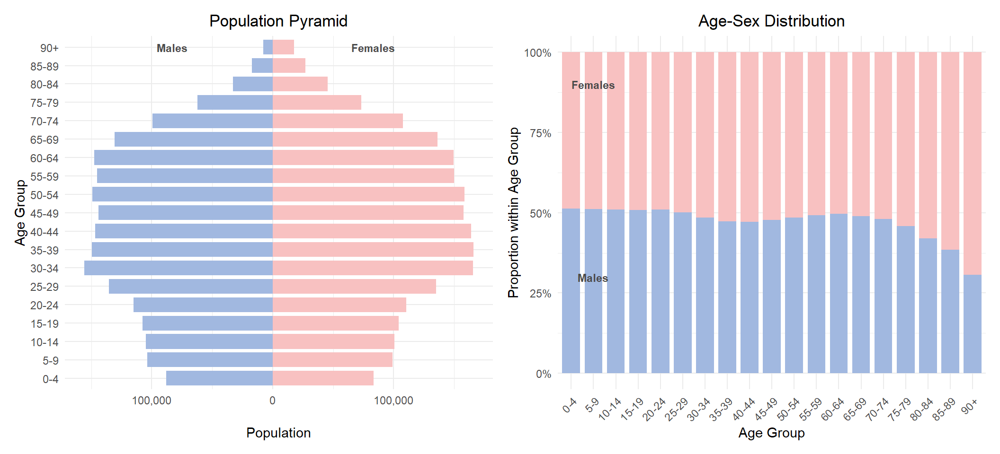
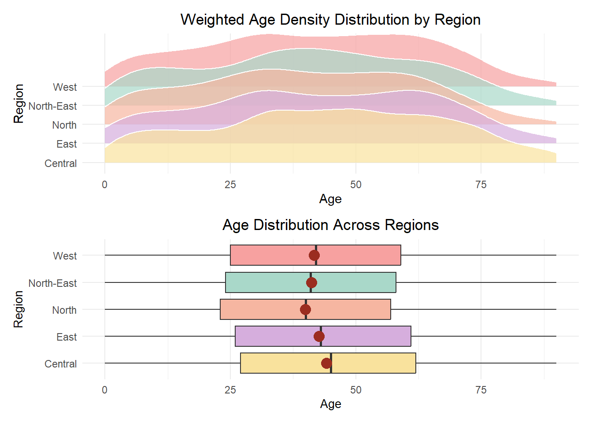

pacman::p_load(ggrepel, patchwork,
tidyverse, scales,
ggridges) Take-home Exercise 1
1 Overview
1.1 Background
With reference to Singstat, Singapore’s resident population, consisting of citizens and permanent residents, stands at 4.18 million in 2024, with close to 20% of residents aged 65 and above. The population is distributed across 55 planning areas and 332 subzones.
1.2 Objectives
This exercise will assume the role of a graphical editor of a media company planning to release an article on demographic structures and distribution of Singapore in 2024. The focus will be on presenting key demographics insights through visualisations.
The data will be processed by using appropriate tidyverse family of packages and the data visualisation will be prepared using ggplot2 and its extensions.
2 Getting started
2.1 Load packages
The following R packages will be loaded using the pacman::p_load() function.
ggrepel: an R package provides geoms for ggplot2 to repel overlapping text labels.
patchwork: an R package for preparing composite figure created using ggplot2.
scales: an R package used for scaling and formatting data in visualisation.
ggridges: an R package for creating the density ridge plot.
2.2 Import data
This exercise will be using Singapore Residents by Planning Area / Subzone, Single Year of Age and Sex, June 2024 dataset shared by Department of Statistics, Singapore (DOS)
Proceed to load the dataset with the following code.
respop_data <- read_csv("data/respopagesex2024.csv")3 Data Wrangling
Using glimpse() function, we get an overview of the dataset.
glimpse(respop_data)Rows: 60,424
Columns: 6
$ PA <chr> "Ang Mo Kio", "Ang Mo Kio", "Ang Mo Kio", "Ang Mo Kio", "Ang Mo K…
$ SZ <chr> "Ang Mo Kio Town Centre", "Ang Mo Kio Town Centre", "Ang Mo Kio T…
$ Age <chr> "0", "0", "1", "1", "2", "2", "3", "3", "4", "4", "5", "5", "6", …
$ Sex <chr> "Males", "Females", "Males", "Females", "Males", "Females", "Male…
$ Pop <dbl> 10, 10, 10, 10, 10, 10, 10, 10, 30, 10, 20, 10, 20, 30, 30, 10, 3…
$ Time <dbl> 2024, 2024, 2024, 2024, 2024, 2024, 2024, 2024, 2024, 2024, 2024,…The dataset has 60,424 rows with 6 columns. This also shows the data type for each column.
3.1 Check for duplicates
A check for duplicates will be conducted with the duplicated function.
respop_data[duplicated(respop_data),]# A tibble: 0 × 6
# ℹ 6 variables: PA <chr>, SZ <chr>, Age <chr>, Sex <chr>, Pop <dbl>,
# Time <dbl>As indicated in the results, there are no duplicates.
3.2 Check for missing values
Using the code below, proceed to check for missing values.
for(column_name in names(respop_data)) {
na_count <- sum(is.na(respop_data[[column_name]]))
if (na_count > 0) {
message("Column '", column_name, "' has ", na_count, " NA values.")
}
}3.3 Recoding
For Age column, it is categorical due to the inclusion of an open-ended group, 90_and_Over. For this exercise, 90_and_Over was recoded to 90 so that Age could be treated as a numeric variable while still including this group in the analysis. This ensures that the completeness of the data. The following code will recode 90_and_Over to 90 and cast Age as numeric.
respop_data_clean <- respop_data %>%
mutate(Age = ifelse(Age == "90_and_Over", "90", Age)) %>%
mutate(Age = as.numeric(Age))3.4 Creating new column
With reference to URA Master Plan 2025, the 55 planning areas are classified into their respective regions with the following code.
region_mapping <- c(
"Ang Mo Kio" = "North-East", "Bedok" = "East", "Bishan" = "Central",
"Boon Lay" = "West", "Bukit Batok" = "West", "Bukit Merah" = "Central",
"Bukit Panjang" = "West", "Bukit Timah" = "Central", "Central Water Catchment" = "North",
"Changi" = "East", "Changi Bay" = "East", "Choa Chu Kang" = "West",
"Clementi" = "West", "Downtown Core" = "Central", "Geylang" = "Central",
"Hougang" = "North-East", "Jurong East" = "West", "Jurong West" = "West",
"Kallang" = "Central", "Lim Chu Kang" = "North", "Mandai" = "North",
"Marina East" = "Central", "Marina South" = "Central", "Marine Parade" = "Central",
"Museum" = "Central", "Newton" = "Central", "North-Eastern Islands" = "North-East",
"Novena" = "Central", "Orchard" = "Central", "Outram" = "Central",
"Pasir Ris" = "East", "Paya Lebar" = "East", "Pioneer" = "West",
"Punggol" = "North-East", "Queenstown" = "Central", "River Valley" = "Central",
"Rochor" = "Central", "Seletar" = "North-East", "Sembawang" = "North",
"Sengkang" = "North-East", "Serangoon" = "North-East", "Simpang" = "North",
"Singapore River" = "Central", "Southern Islands" = "Central", "Straits View" = "Central",
"Sungei Kadut" = "North", "Tampines" = "East", "Tanglin" = "Central",
"Tengah" = "West", "Toa Payoh" = "Central", "Tuas" = "West",
"Western Islands" = "West", "Western Water Catchment" = "West", "Woodlands" = "North",
"Yishun" = "North"
)
respop_data_clean <- respop_data_clean %>%
mutate(Region = region_mapping[PA])4 Data visualisation
4.1 National Distribution of Age and Sex Demographics
To gain an overview of the national age and sex demographics, we use a population pyramid that highlights the age distribution by sex. The stacked bar chart further illustrates the sex distribution within each age group.

# Create 5-year age bands
national_data <- respop_data_clean %>%
mutate(Age = as.integer(Age)) %>%
mutate(
AgeBand = case_when(
Age >= 90 ~ "90+",
TRUE ~ paste0(floor(Age / 5) * 5, "-", floor(Age / 5) * 5 + 4)
)
) %>%
group_by(AgeBand, Sex) %>%
summarise(Total = sum(Pop, na.rm = TRUE), .groups = "drop") %>%
mutate(
Total = ifelse(Sex == "Males", -Total, Total),
AgeBand = factor(AgeBand, levels = c(
paste0(seq(0, 85, 5), "-", seq(4, 89, 5)), "90+"
))
)
# Determine max population size for label positioning
max_pop <- max(abs(national_data$Total))
top_age_band <- tail(levels(national_data$AgeBand), 1)
# Population Pyramid plot with 90+ and top annotations
pyramid_plot <- ggplot(national_data, aes(x = AgeBand, y = Total, fill = Sex)) +
geom_bar(stat = "identity", width = 0.8) +
coord_flip() +
scale_y_continuous(
labels = function(x) comma(abs(x)),
breaks = pretty_breaks()
) +
labs(
title = "Population Pyramid",
x = "Age Group",
y = "Population"
) +
scale_fill_manual(values = c("Males" = "#A1B8E0", "Females" = "#F8C1C1")) +
theme_minimal() +
theme(
plot.title = element_text(hjust = 0.5),
legend.position = "none"
) +
annotate("text", x = top_age_band, y = -max_pop * 0.5, label = "Males", color = "#4A4A4A", fontface = "bold", size = 3) +
annotate("text", x = top_age_band, y = max_pop * 0.5, label = "Females", color = "#4A4A4A", fontface = "bold", size = 3)
stacked_data <- respop_data_clean %>%
mutate(Age = as.integer(Age)) %>%
mutate(
AgeBand = case_when(
Age >= 90 ~ "90+",
TRUE ~ paste0(floor(Age / 5) * 5, "-", floor(Age / 5) * 5 + 4)
),
AgeBand = factor(AgeBand, levels = c(
paste0(seq(0, 85, 5), "-", seq(4, 89, 5)), "90+"
))
) %>%
group_by(AgeBand, Sex) %>%
summarise(Pop = sum(Pop, na.rm = TRUE), .groups = "drop") %>%
group_by(AgeBand) %>%
mutate(Proportion = Pop / sum(Pop)) %>%
ungroup()
# 100% Stacked Bar Chart using categorical age bands
stacked_bar_plot <- ggplot(stacked_data, aes(x = AgeBand, y = Proportion, fill = Sex)) +
geom_bar(stat = "identity", width = 0.8) +
scale_y_continuous(labels = scales::percent_format()) +
labs(
title = "Age-Sex Distribution",
x = "Age Group",
y = "Proportion within Age Group"
) +
scale_fill_manual(values = c("Males" = "#A1B8E0", "Females" = "#F8C1C1")) +
theme_minimal() +
theme(
plot.title = element_text(hjust = 0.5),
axis.text.x = element_text(angle = 45, hjust = 1),
legend.position = "none"
) +
# Annotate "Males" label
annotate("text", x = 2, y = 0.3, label = "Males", color = "#4A4A4A", fontface = "bold", size = 3) +
# Annotate "Females" label
annotate("text", x = 2, y = 0.9, label = "Females", color = "#4A4A4A", fontface = "bold", size = 3)
# Arrange both plots side by side
pyramid_plot + stacked_bar_plotInsights
- The national population pyramid highlights an ageing demographic with a significant concentration of the population observed between the age bands of 30-34 and 65-69, reflecting a large middle-aged and older working population.
- On the other hand, the base of the pyramid is distinctively narrow, indicating persistently low birth rates and a declining proportion of younger residents.
- The overall shape of the pyramid is generally symmetrical, suggesting a relatively balanced distribution between males and females across most age bands. However, the disparities become evident in the older age band. From the 75-79 band onwards, the females increasingly outnumber the males as seen in the 100% stacked bar chart.
4.2 Population Size and Age Group Concentrations by Region
This section explores how the population is spread across different age groups in each region. The stacked bar chart shows the breakdown across five age groups for each region. Additionally, a slope chart shows the proportion of the youth against the senior populations, providing a simple visual of how each region’s population skews younger or older.

age_group_plot <- respop_data_clean %>%
mutate(Age_Group = cut(Age, breaks = c(0, 14, 24, 44, 64, Inf),
labels = c("0-14", "15-24", "25-44", "45-64", "65+"))) %>%
filter(!is.na(Age_Group)) %>%
group_by(Region, Age_Group) %>%
summarise(Total_Pop = sum(Pop, na.rm = TRUE), .groups = "drop") %>%
mutate(Region = fct_reorder(Region, Total_Pop, .fun = sum, .desc = TRUE)) %>%
ggplot(aes(x = Region, y = Total_Pop, fill = Age_Group)) +
geom_bar(stat = "identity") +
labs(title = "Age Group Distribution by Region",
x = "Region", y = "Population", fill = "Age Group") +
scale_fill_manual(values = c("0-14" = "#FFB6C1",
"15-24" = "#B3D9FF",
"25-44" = "#A7D8C7",
"45-64" = "#FFD1A9",
"65+" = "#E0B0FF")) +
theme_minimal() +
theme(axis.text.x = element_text(angle = 45, hjust = 1),
plot.title = element_text(hjust = 0.5))
# Second plot (Slope Chart for Youth vs Senior Population)
youth_senior_data <- respop_data_clean %>%
mutate(Age_Group = case_when(
Age <= 24 ~ "Youth (0–24)",
Age >= 65 ~ "Senior (65+)",
TRUE ~ NA_character_
)) %>%
filter(!is.na(Age_Group)) %>%
group_by(Region, Age_Group) %>%
summarise(Total_Pop = sum(Pop, na.rm = TRUE), .groups = "drop") %>%
pivot_wider(names_from = Age_Group, values_from = Total_Pop) %>%
mutate(
`Youth-to-Senior Ratio` = `Youth (0–24)` / `Senior (65+)`
) %>%
pivot_longer(
cols = c(`Youth (0–24)`, `Senior (65+)`),
names_to = "Group",
values_to = "Population"
)
# Slope chart plot
slope_chart_plot <- ggplot(youth_senior_data, aes(x = Group, y = Population, group = Region)) +
geom_line(aes(color = Region), linewidth = 1) +
geom_point(aes(color = Region), size = 3) +
labs(title = "Youth vs Senior Population by Region",
x = "", y = "Population") +
theme_minimal() +
theme(legend.position = "right",
plot.title = element_text(hjust = 0.5))
# Combine both plots side by side
age_group_plot + slope_chart_plotInsights
The North-East region is the most populous, followed closely by the Central and West regions. In contrast, the East and North regions have significantly smaller populations.
The North-East also has the highest proportion of children aged 0–14, reinforcing its reputation as a family-oriented region popular with young households.
The Central region has the highest concentration of senior citizens (aged 65 and above), followed by the North-East and West regions, while the North region has the smallest senior population.
Age groups of 0-14 and 15-24 remain relatively small across all regions, reflecting a broader national trend of declining birth rates.
The Central region stands out with a near-equal number of youths (aged 0–24) and seniors (65+). Despite signs of ageing, each region still has more youths than seniors, highlighting the continued presence of younger populations alongside an ageing demographic.
4.3 Regional Age Profiles and Distribution Patterns
To get a better understanding of the age distribution and variation across the regions, we plot the following boxplot and density ridge plot.
The boxplot provides an overview of the age distribution within each region while highlighting the median, mean, interquartiles and range. This allows for easy comparison of the central tendency and spread of ages across regions.
Meanwhile, the density ridge plot offers a more nuanced view by visualising the probability density of the age distribution. This reveals the relative density of different age groups across regions, emphasising the shapes and variations in distribution.
Together, these two visualisation provides a more comprehensive view of the population’s age structure, addressing the regional differences.

# Boxplot
respop_expanded <- respop_data_clean %>%
uncount(weights = Pop)
boxplot_plot <- ggplot(respop_expanded, aes(y = Region, x = Age, fill = Region)) +
geom_boxplot() +
labs(title = "Age Distribution Across Regions",
x = "Age",
y = "Region") +
stat_summary(geom = "point",
fun = "mean",
colour = "#9B2D20",
size = 4) +
scale_fill_manual(values = c(
"Central" = "#F9E29D",
"East" = "#D6AEDD",
"North" = "#F6B6A1",
"North-East" = "#A9D8C9",
"West" = "#F7A1A0"
)) +
theme_minimal() +
theme(axis.title = element_text(size = 10),
plot.title = element_text(hjust = 0.5),
legend.position = "none",
)
# Density Ridge Plot
density_ridge_plot <- respop_data_clean %>%
ggplot(aes(x = Age, y = Region,
height = after_stat(density),
fill = Region, weight = Pop)) +
geom_density_ridges(stat = "density", scale = 3, alpha = 0.7, color = "white") +
labs(title = "Weighted Age Density Distribution by Region",
x = "Age", y = "Region") +
scale_fill_manual(values = c(
"Central" = "#F9E29D",
"East" = "#D6AEDD",
"North" = "#F6B6A1",
"North-East" = "#A9D8C9",
"West" = "#F7A1A0"
)) +
theme_minimal() +
theme(legend.position = "none",
plot.title = element_text(hjust = 0.5))
density_ridge_plot / boxplot_plotInsights
All regions show signs of an ageing population, with noticeable age densities continuing into the 60s to 70s.
Among the regions, the North stands out with the youngest age profile, with lowest mean and median. Meanwhile, the Central region has the oldest demographic profile, with the highest mean and median, and a wider spread towards older age groups.
Both the North and North-East regions have their mean nearly identical to its own median, indicating a relatively balanced age distribution. Additionally, these two regions have a younger skew compared to the other regions.
The East and Central regions exhibit broader age distributions into the older age range. Their mean and median are also higher than that of the other regions, suggesting a more mature population.
5 Summary and conclusion
These data visualisation serves as a foundation for telling the story of Singapore’s population in 2024. It strives to help readers better understand Singapore’s demographic landscape and its regional age patterns.
Singapore’s demographic structure in 2024 indicates an ageing population, with most residents aged between 30 to 69 and a shrinking base of younger residents. While the overall gender distribution is relatively well-balanced, females increasingly outnumber males in the older age groups from age 75 onwards.
Across regions, ageing is evident as well. Notably, the Central region has the oldest demographic, while the North has the youngest demographic. Additionally, the North-East is the most populous with the largest proportion of children aged below 14 and below, cementing its reputation as a place of residence for young families.